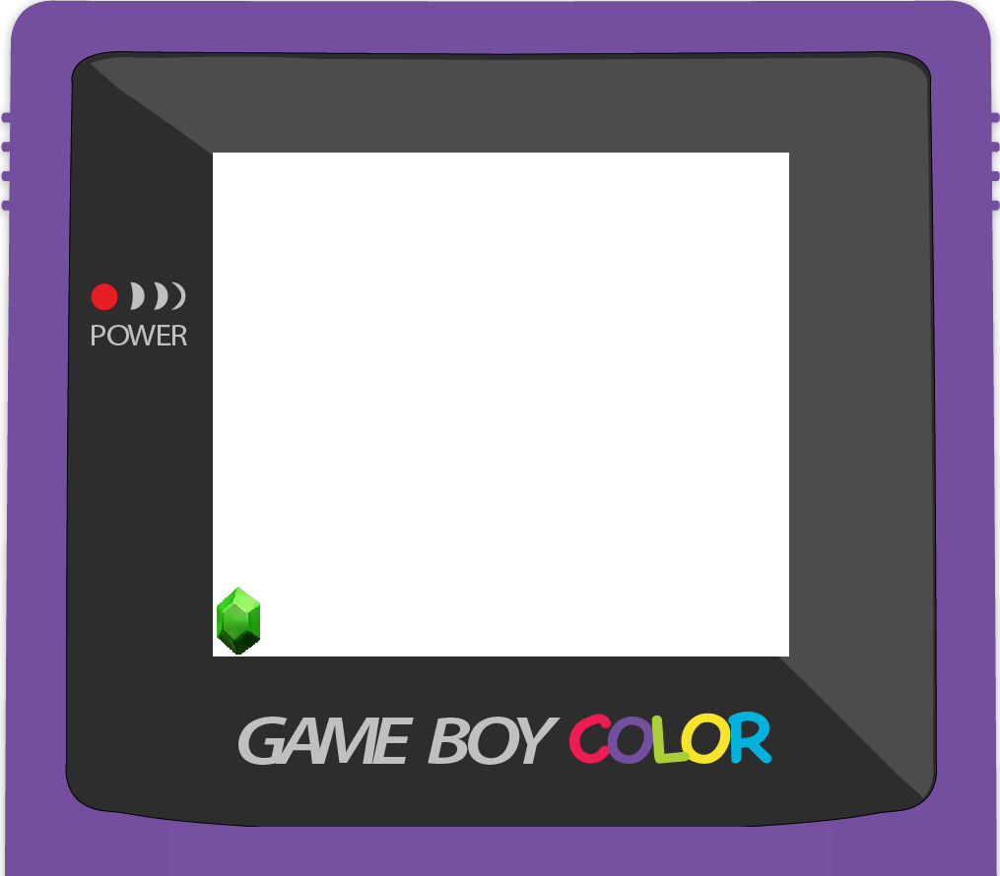

<!DOCTYPE html>
<html>
<head>
  <meta http-equiv="Content-Type" content="text/html; charset=UTF-8" />
  <title>Alien Invaders</title>
  <script src='http://ajax.googleapis.com/ajax/libs/jquery/1.4.2/jquery.min.js'></script>
  <script src='js/engine.js'></script>
  <script src='js/game.js'></script>
  <script src='js/level.js'></script>

  <style>
     

    body {
background: rgb(109,109,109); /* Old browsers */
background: -moz-linear-gradient(top,  rgba(109,109,109,1) 0%, rgba(66,66,66,1) 88%); /* FF3.6+ */
background: -webkit-gradient(linear, left top, left bottom, color-stop(0%,rgba(109,109,109,1)), color-stop(88%,rgba(66,66,66,1))); /* Chrome,Safari4+ */
background: -webkit-linear-gradient(top,  rgba(109,109,109,1) 0%,rgba(66,66,66,1) 88%); /* Chrome10+,Safari5.1+ */
background: -o-linear-gradient(top,  rgba(109,109,109,1) 0%,rgba(66,66,66,1) 88%); /* Opera 11.10+ */
background: -ms-linear-gradient(top,  rgba(109,109,109,1) 0%,rgba(66,66,66,1) 88%); /* IE10+ */
background: linear-gradient(to bottom,  rgba(109,109,109,1) 0%,rgba(66,66,66,1) 88%); /* W3C */
filter: progid:DXImageTransform.Microsoft.gradient( startColorstr='#6d6d6d', endColorstr='#424242',GradientType=0 ); /* IE6-9 */


     background-repeat: no-repeat;
     background-attachment: fixed;
    }
         /* This is my background image for the game */ 
        
        /* 

        IMG.displayed {
        display: block;
        margin-left: auto;
        margin-right: auto }

           

        */

/* MADE THE ACTUAL GAMEBOARD RELATIVE TO WRAPPER SO IT AUTO CENTERS CORRECTLY REGARDLESS OF SCREEN RESIZE - PLACED IN CENTER OF GAMEBOY THROUGH MOVING PIXELS*/

    #gameboard { background-image:url(images/game-background.png); position: relative; top: 160px; left: 265px;}

/* ADDED GAMEBOY WRAP AROUND THE GAME - LINK TO THE ORIGIN OF THE GAME SPRITES */
/* MADE THE WRAPPER AUTO CENTERED*/

     #game-wrapper {display: block; margin-left: auto; margin-right: auto; width: 1030px; height: 890px; background-image:url(images/game-boy.png); background-repeat: no-repeat;}

  </style>

</head>

  <body>
    <div id='game-wrapper'>
   
      <canvas id='gameboard' width='500' height='500'></canvas>
    </div>
  </body>
</html>
